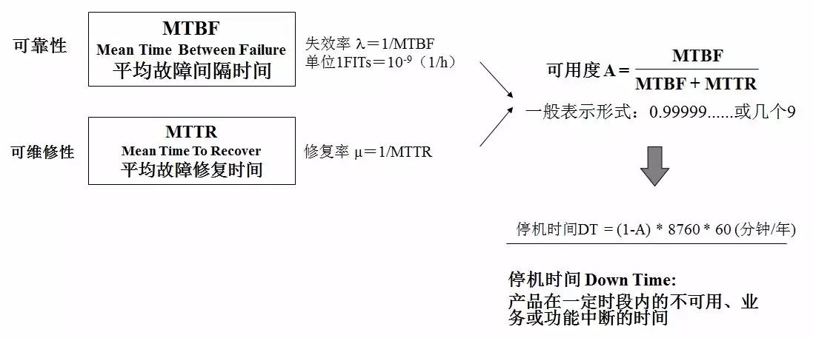

在系统的高可用性（也称为可用性，英文描述为HA，High Available）里有个衡量其可靠性的标准—X个9，这个X是代表数字 3~5。X个9表示在系统1年时间的使用过程中，系统可以正常使用时间与总时间（1年）之比，我们通过下面的计算来感受X个9在不同级别的可靠性差异。
- 3个9：(1-99.9%)*365*24=8.76小时，表示该系统在连续运行1年时间里最多可能的业务中断时间是8.76小时。
- 4个9：(1-99.99%)*365*24=0.876小时=52.6分钟，表示该系统在连续运行1时间里最多可能的业务中断时间是52.6分钟。
- 5个9：(1-99.999%)*365*24*60=5.26分钟，表示该系统在连续运行1年时间里最多可能的业务中断时间是5.26分钟。
那么X个9里面的X只代表数字3~5，为什么没有1~2，也没有大于5的呢？接着往下计算：
- 1个9：(1-90%)*365=36.5天
- 2个9：(1-99%)*365=3.65天
- 6个9：(1-99.9999%)*365*24*60*60=31秒
可以看到1个9和2个9分别表示1年内业务可能中断的时间是36.5天、3.65天，这种级别的可靠性或许还达不到高可靠性；而6个9则表示1年内业务中断时间最多是31秒，这个级别的可靠性并非实现不了，而是要做到从5个9到6个9的可靠性提升要付出成本太高。
| 可靠性 | 级别 | 年停机时间（分钟） |
|---|---|---|
| 99.9% | 3个9 | 500 |
| 99.99% | 4个9 | 50 |
| 99.999% | 5个9 | 5 |
| 99.9999% | 6个9 | 0.5 |
补充：
-
【MTBF】即平均故障间隔时间，英文全称是：Mean Time Between Failure。是衡量一个产品的可靠性指标，单位为：小时。具体来说，是指相邻两次故障之间的平均工作时间，也称为平均故障间隔。概括的说，产品故障少的就是可靠性高，产品的故障总数与寿命单位总数之比叫：故障率（Failure rate）。
-
【失效率】是指工作到某一时刻尚未失效的产品，在该时刻后单位时间内发生失效的概率。一般记为：λ，它也是时间t的函数，故也记为：λ(t)，称为失效率函数，有时也称为故障率函数或风险函数。 失效率 λ=1/MTBF，单位1FITs=10-9(1/h)
-
【MTTR】即平均修复时间，英文全称是：Mean Time To Repair。是指可修复产品的平均修复时间，就是从出现故障到修复中间的这段时间。MTTR越短表示易恢复性越好。
-
【修复率】表示为：μ，英文全称是：Repair Rate，产品维修性的一种基本参数。修理时间已达到某个时刻但尚未修复的产品，在该时刻后的单位时间内完成修复的概率。

Last modified on 2020-03-29